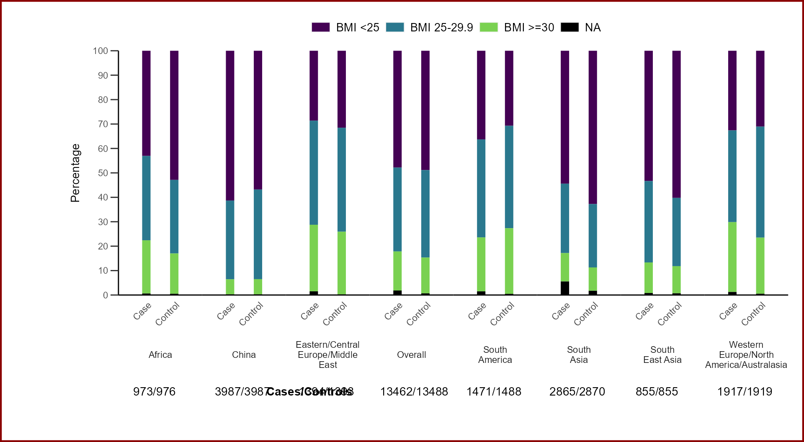
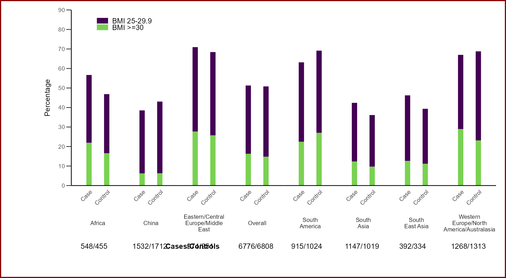
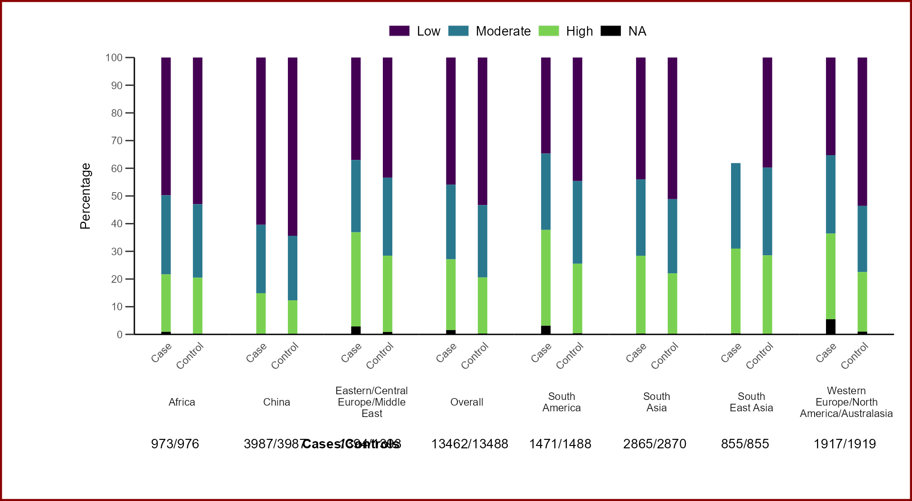
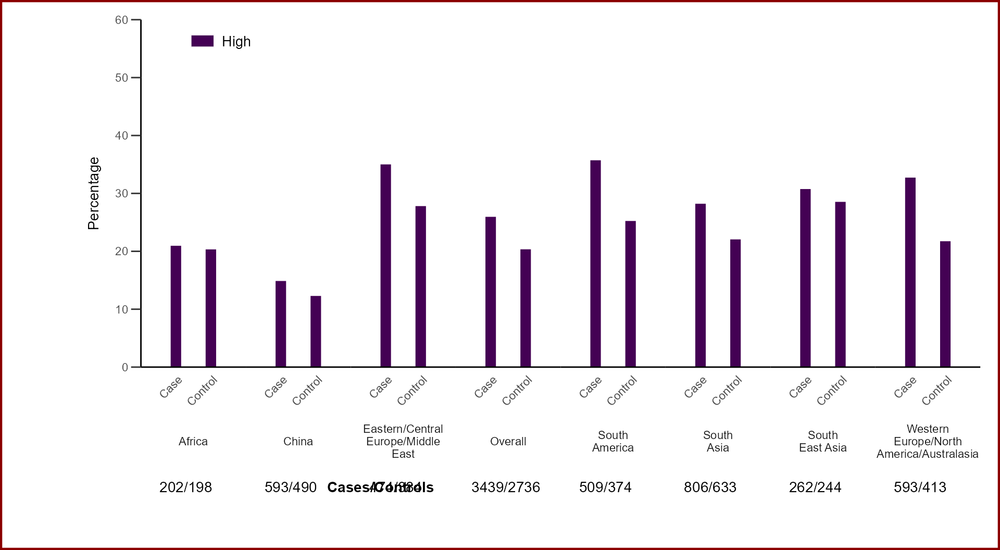

interstroke_proportion_figure
interstroke_proportion_figure.RmdWelcome to the Interstroke R Package
Let’s start exploring. The first thing to do is call the interstroke library.
library(interstroke)Create your proportion figure
The proportions figure creates a stacked bar plot illustrating the proportions of a predictor variable (y-axis) across collected categories (x-axis), split by cases and controls.
The function requires at least three arguments.
The first argument (interstroke_data) is a dataframe containing the required variables.
The Second argument (x_axis_variable) is a categorical variable that will be split across the x-axis by cases and controls.
The third argument (proportion_variable) is the proportional variable that shows the proportional split within each categories cases & controls.
Optional arguments may be provided for the following:
dropped_prop_levels: To exclude named levels of the predictor variable from the plot, assign a collection of the variables labels to exclude to “dropped_prop_levels”. e.g. dropped_prop_levels = c(“BMI <25”).
na_rm: To drop NA’s from the analysis, use the na_rm logical argument, default is set to FALSE.
text_size: Assign a text size. Default is text_size = 3.7.
Example 1: We’ll look at the proportional split of BMI by regions using the is_proportion_figure function.
# is_figure_proportion(interstroke_data, x_axis_variable, y_axis_variable)
is_figure_proportion(interstroke_bmi, regionnn7, bmi_3_level)
Example 2: To filter named predictor levels. Create a collection of levels to exclude assigned to “dropped_prop_levels”. Here we also exclude NA values using the na_rm = TRUE argument.
# Exclude BMI<25 and NA's
is_figure_proportion(interstroke_bmi, regionnn7, bmi_3_level,
dropped_prop_levels = c("BMI <25"), na_rm = TRUE)
Example 3: We’ll look at the proportional split of abdominal obesity (waist-to-hip ratio) by regions.
is_figure_proportion(interstroke_proxy, regionnn7, highwhr)
#> Warning: Removed 1 rows containing missing values (geom_col).
Example 4: Example 3 with exclusions and dropped NA’s. Notice the y-axis will automatically adjust if all proportions are low.
#Exclude NA's, Low and Moderate whr's.
is_figure_proportion(interstroke_proxy, regionnn7, highwhr,
dropped_prop_levels = c("Low", "Moderate"), na_rm = TRUE)